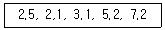
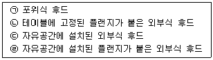
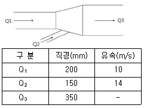

산업위생관리산업기사 (2018-03-04 기출문제)
1과목: 산업위생학 개론
1. 착암기 또는 해머(Hammer) 같은 공구를 장기간 사용한 근로자에게 가장 유발되기 쉬운 국소진동에 의한 신체 증상은?
- 피부암
- 소화 장애
- 불면증
- 레이노드씨 현상
(정답률: 91%)

2. 산업위생전문가의 윤리강령 중 전문가로서의 책임과 가장 거리가 먼 것은?
- 학문적으로 최고수준을 유지한다.
- 이해관계가 상반되는 상황에는 개입하지 않는다.
- 위험요인과 예방조치에 관하여 근로자와 상담한다.
- 과학적 방법을 적용하고 자료해석에서 객관성을 유지한다.
(정답률: 64%)
3. 산업위생의 정의에 포함되지 않는 산업위생 전문가의 활동은?
- 지역 주민의 건강의식에 대하여 설문지로 조사한다.
- 지하상가 등에서 공기 시료 등을 채취하여 유해인자를 조사한다.
- 지역주민의 혈액을 직접채취하고 생체시료 중의 중금속을 분석한다.
- 특정 사업장에서 발생한 직업병의 사회적인 영향에 대하여 조사한다.
(정답률: 69%)
4. 고온다습한 작업환경에서 격심한 육체적 노동을 하거나 옥외에서 태양의 복사열을 두부에 직접적으로 받는 경우 체온조절 기능의 이상으로 발생하는 증상은?
- 열경련(heat cramp)
- 열사병(heat stroke)
- 열피비(heat exhaustion)
- 열쇠약(heat prostration)
(정답률: 80%)
5. 상온에서 음속은 약 344m/s이다. 주파수가 2kHz인 음의 파장은 얼마인가?
- 0.172m
- 1.72m
- 17.2m
- 172m
(정답률: 47%)
6. 노출기준 선정의 근거자료로 가장 거리가 먼 것은?
- 동물실험 자료
- 인체실험 자료
- 산업장 역학조사 자료
- 화학적 성질의 안정성
(정답률: 73%)
7. 작업대사율(RMR)=7로 격심한 작업을 하는 근로자의 실동율(%)은? (단. 사이또와 오시마의 식을 이용한다.)
- 20
- 30
- 40
- 50
(정답률: 76%)
8. 작업 자세는 피로 또는 작업능률과 관계가 깊다. 가장 바람직하지 않은 자세는?
- 작업 중 가능한 움직임을 고정한다.
- 작업대와 의자의 높이는 개인에게 적합하도록 조절한다.
- 작업물체와 눈과의 거리는 약 30 ~ 40cm 정도 유지한다.
- 작업에 주로 사용하는 팔의 높이는 심장 높이로 유지한다.
(정답률: 74%)
9. 한랭 작업을 피해야 하는 대상자로 가장 거리가 먼 사람은?
- 심장질환자
- 고혈압 환자
- 위장장애자
- 내분비 장애자
(정답률: 66%)
10. 미국산업위생전문가협의회(ACGIH)의 발암물질 구분 중 발암성 확인물질을 표시한 것은?
- A1
- A2
- A3
- A4
(정답률: 81%)
11. 미국국립산업안전보건연구원(NIOSH)에서 정하고 있는 중량물 취급 작업기준이 아닌 것은?
- 감시시준(Action limit : AL)
- 허용기준(Threshold limit values : TLV)
- 권고기준(Recommended weight limit : RWL)
- 최대허용기준(Maximum permissible limit : MPL)
(정답률: 66%)
12. 근육운동에 필요한 에너지를 생성하는 방법에는 혐기성 대사와 호기성 대사가 있다. 혐기성 대사의 에너지원이 아닌 것은?
- 지방
- 크레아틴인산
- 글리코겐
- 아데노신삼인산(ATP)
(정답률: 80%)
13. 산업안전보건법상 신규화학물질의 유해성, 위험성 조사에서 제외되는 화학물질이 아닌것은?
- 원소
- 방사성물질
- 일반 소비자의 생활용이 아닌 인공적으로 합성된 화학물질
- 고용노동부장관이 환경부장관과 협의하여 고시하는 화학물질 목록에 기록되어 있는 물질
(정답률: 64%)
14. 피로한 근육에서 측정된 근전도(EMG)의 특성만을 맞게 나열한 것은?
- 저주파(0 ~ 40Hz)에서 힘의 감소, 총전압의 감소
- 저주파(0 ~ 40Hz)에서 힘의 증가, 평균주파수의 감소
- 고주파(40 ~ 200Hz)에서 힘의 감소, 총전압의 감소
- 고주파(40 ~ 200Hz)에서 힘의 증가, 평균주파수의 감소
(정답률: 62%)
15. 산업심리학(industrial psychology)의 주된 접근방법은 무엇인가?
- 인지적 접근방법 및 행동학적 접근방법
- 인지적 접근방법 및 생물학적 접근방법
- 행동적 접근방법 및 정신분석적 접근방법
- 생물학적 접근방법 및 정신분석적 접근방법
(정답률: 63%)
16. 한국의 산업위생역사에 대한 역사의 연혁으로 틀린 것은?
- 산업보건연구원 개원 - 1992년
- 수은중독으로 문송면군의 사망 - 1988년
- 한국산업위생학회 창립 - 1990년
- 산업위생관련 자격제도 도입 - 1981년
(정답률: 58%)
17. 산업안전보건법령상 보관하여야 할 서류와 그 보존기간이 잘못 연결된 것은?
- 건강진단 결과를 증명하는 서류 : 5년간
- 보건관리 업무 수탁에 관한 서류 : 3년간
- 작업환경측정 결과를 기록한 서류 : 3년간
- 발암성 확인물질을 취급하는 근로자에 대한 건강진단 결과의 서류 : 30년간
(정답률: 63%)
18. 노출기준(TLV)의 적용에 관한 설명으로 적절하지 않은 것은?
- 대기오염 평가 및 관리에 적용할 수 없다.
- 반드시 산업위생 전문가에 의하여 적용되어야 한다.
- 독성의 강도를 비교할 수 있는 지표로 사용된다.
- 기존의 질병이나 육체적 조건을 판단하기 위한 척도로 사용될 수 없다.
(정답률: 67%)
19. 자동차 부품을 생산하는 A공장에서 250명의 근로자가 1년 동안 작업하는 가운데 21건의 재해가 발생하였다면, 이 공장의 도수율은 약 얼마인가? (단 1년에 300일, 1일에 8시간 근무하였다)
- 35
- 36
- 42
- 43
(정답률: 77%)
20. NOISH에서 권장하는 중량물 취급 작업시 감시기준(AL)이 20kg일 때, 최대허용기준(MPL)은 몇 kg인가?
- 25
- 30
- 40
- 60
(정답률: 78%)
2과목: 작업환경측정 및 평가
21. 입자상물질의 크기를 표시하는 방법 중 어떤 입자가 동일한 종단침강속도를 가지며 밀도가 1g/cm3인 가상적인 구형 직경을 무엇이라고 하는가?
- 페렛직경
- 마틴직경
- 질량중위직경
- 공기역학적 직경
(정답률: 71%)
22. 태양이 내리쬐지 않는 옥외 작업장에서 자연습구온도가 24℃이고 흑구온도가 26℃일 때, 작업환경의 습구흑구온도지수는?
- 21.6℃
- 22.6℃
- 23.6℃
- 24.6℃
(정답률: 80%)
23. 다음 중 기체크로마토그래피에서 주입한 시료를 분리관을 거쳐 검출기까지 운반하는 가스에 대한 설명과 가장 거리가 먼 것은?
- 운반가스는 주로 질소, 헬륨이 사용된다.
- 운반가스는 활성이며, 순수하고 습기가 조금 있어야 한다.
- 가스를 기기에 연결시킬 때 누출부위가 없어야 한다.
- 운반가사의 순도는 99.99% 이상의 순도를 유지해야 한다.
(정답률: 78%)
24. 주물공장에서 근로자에게 노출되는 호흡성 먼지를 측정한 결과(mg/m3)가 다음과 같았다면 기하평균농도(mg/m3)는?

- 3.6
- 3.8
- 4.0
- 4.2
(정답률: 59%)
25. 다음 중 불꽃방식의 원자흡광 분석장치의 일반적인 특징과 가장 거리가 먼 것은?
- 시료량이 많이 소요되며 감도가 낮다.
- 가격이 흑연로장치에 비하여 저렴하다.
- 분석시간이 흑연로장치에 비하여 길게 소요된다.
- 고체시료의 경우 전처리에 의하여 매트릭스를 제거하여야 한다.
(정답률: 57%)
26. 원자흡광 분석장치에서 단색광이 미지 시료를 통과할 때, 최초광의 80%가 흡수되었다면 흡광도는 약 얼마인가?
- 0.7
- 0.8
- 0.9
- 1.0
(정답률: 65%)
27. 500ml 용량의 뷰렛을 이용한 비누거품미터의 거룸 통과시간을 3번 측정한 결과, 각각 10.5초, 10초, 9.5초 일 때, 이 개인시료포집기의 포집유량은 약 몇 L/분인가? (단, 기타 조건은 고려하지 않는다.)
- 0.3
- 3
- 0.5
- 5
(정답률: 46%)
28. 탈착용매로 사용되는 이황화탄소에 관한 설명으로 틀린 것은?
- 이황화탄소는 유해성이 강하다.
- 기체크로마토그래피에서 피크가 크게 나와 분석에 영향을 준다.
- 주로 활성탄관으로 비극성유기용제를 채취하였을 때 탈착용매로 사용한다.
- 상온에서 휘발성이 강하여 장시간 보관하면 휘발로 인해 분석농도가 정확하지 않다.
(정답률: 40%)
29. 다음 중 극성이 가장 큰 물질은?
- 케톤류
- 올레핀류
- 에스테르류
- 알데하이드류
(정답률: 72%)
30. 다음 중 2차 표준기구와 가장 거리가 먼 것은?
- 폐활량계
- 열선기류계
- 오리피스 미터
- 습식테스트 미터
(정답률: 79%)
31. 다음 흡착제 중 가장 많이 사용하는 것은?
- 활성탄
- 실리카겔
- 알루미나
- 마그네시아
(정답률: 80%)
32. 다음 중 흡착제인 활성탄에 대한 설명과 가장 거리가 먼 것은?
- 비극성류 유기용제의 흡착에 효과적이다.
- 휘발성이 큰 저분자량의 탄화수소 화합물의 채취효율이 떨어진다.
- 표면의 산화력이 작기 때문에 반응성이 큰 알데하이드의 포집에 효과적이다.
- 케톤의 경우 활성탄 표면에서 물을 포함하는 반응에 의해 파괴되어 탈착률과 안정성에서 부적절하다.
(정답률: 57%)
33. 작업환경 중 A가 30ppm, B가 20ppm, C가 25ppm 존재할 때, 작업환경 공기의 복합노출지수는? (단 A, B, C의 TLV는 각각 50, 25, 50 ppm이고, A, B, C는 상가작용을 일으킨다.)
- 1.3
- 1.5
- 1.7
- 1.9
(정답률: 71%)
34. 유량, 측정시간, 회수율 및 분석 등에 의한 오차가 각각 15, 3, 9, 5% 일 때, 누적오차는 약 몇 %인가?
- 18.4
- 20.3
- 21.5
- 23.5
(정답률: 73%)
35. 측정에서 사용되는 용어에 대한 설명이 틀린 것은? (단, 고용노동부의 고시를 기준으로 한다.)
- “검출한계”란 분석기기가 검출할 수 있는 가장 작은 양을 말한다.
- “정량한계”란 분석기기가 정성적으로 측정할 수 있는 가장 작은 양을 말한다.
- “회수율”이란 여과지에 채취된 성분을 추출과정을 거쳐 분석시 실제 검출되는 비율을 말한다.
- “탈착효율”이란 흡착제에 흡착된 성분을 추출과정을 거쳐 분석시 실제 검출되는 비율을 말한다.
(정답률: 61%)
36. 시료채취방법에서 지역시료(area sample) 포집의 장점과 거리가 먼 것은?
- 근로자 개인시료의 채취를 대신할 수 있다.
- 특정 공정의 농도분포 변화 및 환기장치의 효율성 변화 등을 알 수 있다.
- 특정 공정의 계절별 농도변화 및 공정의 주기별 농도변화 등의 분석이 가능하다.
- 측정결과를 통해서 근로자에게 노출되는 유해인자의 배경농도와 시간별 변화 등을 평가할 수 있다.
(정답률: 74%)
37. 100ppm을 %로 환산하면 몇 %인가?
- 1%
- 0.1%
- 0.01%
- 0.001%
(정답률: 70%)
38. 누적소음노출량 측정기를 사용하여 소음을 측정할 때, 우리나라 기준에 맞는 Criteria 및 Exchange Rate는? (단, 고용노동부 고시를 기준으로 한다.)
- Criteria : 80DB, Exchange Rate : 5dB
- Criteria : 80DB, Exchange Rate : 10dB
- Criteria : 90DB, Exchange Rate : 5dB
- Criteria : 90DB, Exchange Rate : 10dB
(정답률: 70%)
39. PVC 필터를 이용하여 먼지 포집시 필터무게는 채취 후 18.115mg이며 채취 전 무게는 14.316mg이었다. 이 때 공기채취량이 400L이라면, 포집된 먼지의 농도는 약 몇 mg/m3인가? (단, 공시료의 무게 차이는 없었던 것으로 가정한다)
- 8.5
- 9.5
- 8000
- 9500
(정답률: 64%)
40. 소음 수준 측정 시 소음계의 청감보정회로는 어떻게 조정하여야 하는가? (단, 고용노동부 고시를 기준으로 한다.)
- A특성
- C특성
- S특성
- K특성
(정답률: 78%)
3과목: 작업환경관리
41. 저온에 의한 생리반응 중 이차적인 생리적 반응으로 옳지 않은 것은?
- 혈압이 일시적으로 상승한다.
- 피부혈관의 수축으로 순환기능이 감소된다.
- 말초혈관의 수축으로 표면조직의 냉각이 온다.
- 근육활동이 감소하여 식욕이 떨어진다.
(정답률: 70%)
42. 입자상 물질의 종류 중 연마, 분쇄, 절삭 등의 작업공정에서 고형물질이 파쇄되어 발생되는 미세한 고체입자를 무엇이라 하는가?
- 흄(Fume)
- 먼지(Dust)
- 미스트(Mist)
- 연기(Smoke)
(정답률: 59%)
43. 다음 중 방사선에 감수성이 가장 낮은 인체조직은?
- 골수
- 근육
- 생식선
- 림프세포
(정답률: 58%)
44. 작업공정에서 발생되는 소음의 음압수준이 90dB(A)이고 근로자는 귀덮개(NRR=27)를 착용하고 있다면, 근로자에게 실제 노출되는 음압수준은 약 몇 dB(A)인가? (단, OSHA를 기준으로 한다.)
- 95
- 90
- 85
- 80
(정답률: 62%)
45. 다음 중 깊은 물에서 올라오거나 감압실 내에서 감압을 하는 도중에 발생하는 기포형성으로 인해 건강상 문제를 유발하는 가스의 종류는??
- 질소
- 수소
- 산소
- 이산화탄소
(정답률: 75%)
46. 소음방지를 위한 흡음재료의 선택 및 사용상 주의 사항으로 틀린 것은?
- 막진동이나 판진동형의 것은 도장 여부에 따라 흡음률의 차이가 크다.
- 실의 모서리나 가장자리 부분에 흡음제를 부착시키면 흡음효과가 좋아진다.
- 다공질 재료는 산란되기 쉬우므로 표면을 얇은 직물로 피복하는 것이 바람직하다.
- 흡음재료를 벽면에 부착할 때 한곳에 집중하는 것보다 전체 내벽에 분산하여 부착하는 것이 흡음력을 증가시킨다.
(정답률: 45%)
47. 다음 중 실내 오염원인 라돈에 관한 설명과 가장 거리가 먼 것은?
- 라돈 가스는 호흡하기 쉬운 방사선 물질이다.
- 라돈은 폐암의 발생률을 높이고 있는 것으로 보고되었다.
- 라돈 가스는 공기보다 9배 무거워 지표에 가깝게 존재한다.
- 핵폐기물장 주변 또는 핵발전소 부근에서 주로 방출되고 있다.
(정답률: 65%)
48. 다음 중 인체가 느낄 수 있는 최저한계 기류의 속도는 약 몇 m/sec인가?
- 0.5
- 1
- 5
- 10
(정답률: 63%)
49. 방진마스크의 밀착성 시험 중 정량적인 방법에 관한 설명으로 옳은 것은?
- 간단하게 실험할 수 있다.
- 누설의 판정기준이 지극히 개인적이다.
- 시험장치가 비교적 저가이며 측정조작이 쉽다.
- 일반적으로 보호구의 안과 밖에서 농도의 차이나 압력의 차이로 밀착정도를 수적인 방법으로 나타낸다.
(정답률: 59%)
50. 다음 중 작업환경 개선대책 중 격리에 대한 설명과 가장 거리가 먼 것은?
- 작업자와 유해요인 사이에 물체에 의한 장벽을 이용한다.
- 작업자와 유해요인 사이에 명암에 의한 장벽을 이용한다.
- 작업자와 유해요인 사이에 거리에 의한 장벽을 이용한다.
- 작업자와 유해요인 사이에 시간에 의한 장벽을 이용한다.
(정답률: 67%)
51. 산소농도 단게별 증상 중 산소농도가 6~10%인 산소결핍 작업장에서의 증상으로 가장 적절한 것은?
- 순간적인 실신이나 혼수
- 계산착오, 두통, 메스꺼움
- 귀울림, 맥박수 증가, 호흡수 증가
- 의식 상실, 안면 창백, 전신 근육경련
(정답률: 67%)
52. 할당보호계수가 25인 반면형 호흡기보호구를 구리흄이 존재하는 작업장에서 사용한다면 최대사용농도는 몇 mg/m3인가? (단, 허용농도는 0.3mg/m3 이다.)
- 3.5
- 5.5
- 7.5
- 9.5
(정답률: 58%)
53. 다음 전리방사선의 종류 중 투과력이 가장 강한 것은?
- X-선
- 중성자
- 알파선
- 감마선
(정답률: 71%)
54. 작업환경 중에서 발생되는 분진에 대한 방진대책을 수립하고자 한다. 다음 중 분진발생방지 대책으로 가장 적합한 방법은?
- 전체 환기
- 작업시간의 조정
- 물 등에 의한 취급 물질의 습식화
- 방진마스크나 송기마스크에 의한 흡입방지
(정답률: 63%)
55. 기계 A의 소음이 85dB(A), 기계 B의 소음이 84dB(A)일 때, 총 음압수준은 약 몇 dB(A)인가?
- 84.7
- 86.3
- 87.5
- 90.4
(정답률: 61%)
56. 작업환경개선 대책 중 대체의 방법으로 옳지 않은 것은?
- 분체의 원료는 입자가 큰 것으로 바꾼다.
- 야광시계의 자판에서 라듐을 인으로 대체한다.
- 금속제품 도장용으로 유기용제를 수용성 도료로 전환한다.
- 아조염료의 합성에서 원료로 디클로로벤지딘을 사용하던 것을 방부기능의 벤지딘으로 바꾼다.
(정답률: 62%)
57. 음원에서 10m 떨러진 곳에서 음압수준이 89dB(A)일 때, 음원에서 20m 떨어진 곳에서의 음압수준은 약 몇 dB(A)인가? (단, 점음원이고 장해물이 없는 자유공간에서 구면상으로 전파한다고 가정한다.)
- 77
- 80
- 83
- 86
(정답률: 46%)
58. 체내로 흡입하게 되면 부식성이 강하여 점막 등에 침착되어 궤양을 유발하고 장기적으로 취급하면 비중격 천공을 일으키는 물질은?
- 크롬
- 수은
- 아세톤
- 카드늄
(정답률: 76%)
59. 비교원성 진폐증의 종류로 가장 알맞은 것은?
- 규폐증
- 주석폐증
- 석면폐증
- 탄고아부 진폐증
(정답률: 46%)
60. 다음 중 고압환경에서 인체작용인 2차적인 가압현상에 관한 설명과 가장 거리가 먼 것은?
- 산소의 분압이 2기압을 넘으면 산소중독증세가 나타난다.
- 이산화탄소는 산소의 독성과 질소의 마취작용을 증가시킨다.
- 질소의 분압이 2기압을 넘으면 근육경련, 정신혼란과 같은 현상이 발생한다.
- 4기압 이상에서 공기 중의 질소가스는 마취작용을 나타내며 작업력의 저하, 기분의 변환, 다행증을 일으킨다.
(정답률: 48%)
4과목: 산업환기
61. 전자부품을 납땜하는 공정에 외부식 국소배기장치를 설치하려고 한다. 후드의 규격은 400mm × 400mm, 제어거리(X)를 20cm, 제어속도(VC)를 0.5m/sec로 하고자 할 때의 소요풍량(m3/min)보다 후드에 플랜지를 부착하여 공간에 설치하면 소요풍량(m3/min)은 얼마나 감소하는가?
- 1.2
- 2.2
- 3.2
- 4.2
(정답률: 31%)
62. 전기집진기(ESP, electrostatic precipitator)의 장점이라고 볼 수 없는 것은?
- 좁은 공간에서도 설치가 가능하다.
- 보일러와 철강로 등에 설치할 수 있다.
- 약 500℃ 전후 고온의 입자상 물질도 처리가 가능하다.
- 넓은 범위의 입경과 분진의 농도에서 집진효율이 높다.
(정답률: 69%)
63. 블로우다운(Blow down) 효과와 관련이 있는 공기정화장치는?
- 전기집진장치
- 원심력집진장치
- 중력집진장치
- 관성력집진장치
(정답률: 66%)
64. 용융로 상부의 공기 용량은 200m3/min, 온도는 400℃, 1기압이다. 이것을 21℃, 1기압의 상태로 환산하면 공기의 용량은 약 몇 m3/min가 되겠는가?
- 82.6
- 87.4
- 93.4
- 116.6
(정답률: 57%)
65. 작업공정에서는 이상이 없다고 가정할 때, 보기의 후드를 효율이 가장 우수한 것부터 나쁜 순으로 나열한 것은? (단, 제어속도는 1m/sec, 제어거리는 0.5m, 개구면적은 2m2으로 동일하다.)

- ㉠ - ㉢ - ㉡ - ㉣
- ㉡ - ㉠ - ㉢ - ㉣
- ㉠ - ㉡ - ㉣ - ㉢
- ㉡ - ㉠ - ㉣ - ㉢
(정답률: 67%)
66. 국소배기장치의 기본 설계 시 가장 먼저 해야 하는 것은?
- 적정 제어풍속을 정한다.
- 후드의 형식을 선정한다.
- 각각의 후드에 필요한 송풍량을 계산한다.
- 배관계통을 검토하고 공기정화장치와 송풍기의 설치위치를 정한다.
(정답률: 68%)
67. 정압, 속도압, 전압에 관한 설명 중 틀린 것은?
- 정압이 대기압 보다 높으면 (+) 압력이다.
- 정압이 대기압 보다 낮으면 (-) 압력이다.
- 정압과 속도압의 합을 총압 또는 전압이라고 한다.
- 공기흐름이 기인하는 속도압은 항상 (-) 압력이다.
(정답률: 75%)
68. 사무실 직원이 모두 퇴근한 직후인 오후 6시에 측정한 공기 중 CO2 농도는 1200ppm, 사무실이 빈 상태로 3시간이 경과한 오후 9시에 측정한 CO2 농도는 400ppm이었다면, 이 사무실의 시간당 공기교환 횟수는? (단, 외부공기 중 CO2 농도는 330ppm으로 가정한다.)
- 0.68
- 0.84
- 0.93
- 1.26
(정답률: 48%)
69. 국소배기장치의 압력손실이 증가되는 경우가 아닌 것은?
- 덕트를 길게 한다.
- 덕트의 직경을 줄인다.
- 덕트를 급격하게 구부린다.
- 곡관의 곡률반경을 크게 한다.
(정답률: 53%)
70. 에너지 절약의 일환으로 실내 공기를 재순환시켜 외부 공기와 혼합하여 공급하는 경우가 많다. 재순환 공기 중 CO2의 농도가 700ppm, 급기 중 CO2의 농도가 600ppm 이었다면, 급기 중 외부공기의 함량은 몇 %인가 ? (단 외부공기 중 CO2의 농도는 300ppm이다.)
- 25%
- 43%
- 50%
- 86%
(정답률: 39%)
71. 전체환기 방식에 대한 설명 중 틀린 것은?
- 자연환기는 기계환기보다 보수가 용이하다.
- 효율적인 자연환기는 냉방비 절감효과가 있다.
- 청정공기가 필요한 작업장은 실내압을 양압(+)으로 유지한다.
- 오염이 높은 작업장은 실내압을 매우 높은 양압(+)으로 유지하여야 한다.
(정답률: 62%)
72. 제어속도의 범위를 선택할 때 고려되는 사항으로 가장 거리가 먼 것은?
- 근로자 수
- 작업장 내 기류
- 유해물질의 사용량
- 유해물질의 독성
(정답률: 76%)
73. 전자부품을 납땜하는 공정에 외부식 국소배기장치를 설치하고자 한다. 후드의 규격은 400mm × 400mm, 반송속도를 1200m/min으로 하고자 할 때 덕트 내에서 속도압은 약 몇 mmH2O인가? (단, 덕트 내의 온도는 21℃이며, 이 때 가스의 밀도는 1.2kg/m3이다.)
- 24.5
- 26.6
- 27.4
- 28.5
(정답률: 37%)
74. 송풍기 상사법칙과 관련이 없는 것은?
- 송풍량
- 축동력
- 회전수
- 덕트의 길이
(정답률: 50%)
75. 국소배기시스템에 설치된 충만실(plenum chamber)에 있어 가장 우선적으로 높여야 하는 효율의 종류는?
- 정압효율
- 집진효율
- 배기효율
- 정화효율
(정답률: 57%)
76. 그림과 같이 Q1과 Q2에서 유입된 기류가 합류관린 Q3로 흘러갈 때, Q3의 유량(m3/mim)은 약 얼마인가? (단, 합류와 확대에 의한 압력손실은 무시한다.)

- 33.7
- 36.3
- 38.5
- 40.2
(정답률: 46%)
77. 유입계수(Ce)가 0.6인 플랜지 부착 원형후드가 있다. 이 때 후드의 유입손실계수(Fh)는 얼마인가?
- 0.52
- 0.98
- 1.26
- 1.78
(정답률: 46%)
78. 국소배기장치의 설계 시 송풍기의 동력을 결정할 때 가장 필요한 정보는?
- 송풍기 동압과 가격
- 송풍기 동압과 효율
- 송풍기 전압과 크기
- 송풍기 전압과 필요송풍량
(정답률: 66%)
79. 건조 공기가 원형식 관내를 흐르고 있다. 속도압이 6mmH2O이면 풍속은 얼마인가? (단, 건조공기의 비중량 1.2kgf/m3이며, 표준상태이다.)
- 5m/sec
- 10m/sec
- 15m/sec
- 20m/sec
(정답률: 52%)
80. 사염화에틸렌 2000ppm이 공기 중에 존재한다면 공기와 사염화에틸렌 혼합물의 유효비 중(effective specific gravity)은 얼마인가? (단, 사염화에틸렌의 증기비중은 5.7이다.)(오류 신고가 접수된 문제입니다. 반드시 정답과 해설을 확인하시기 바랍니다.)
- 1.094
- 1.823
- 2.342
- 3.783
(정답률: 42%)